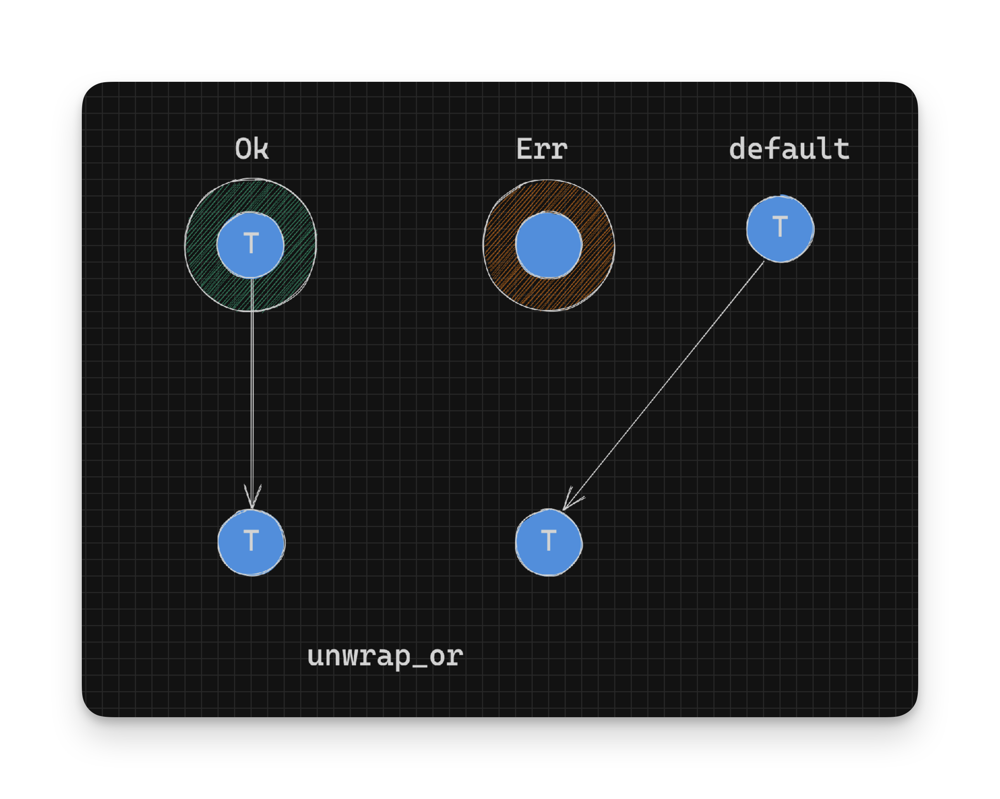
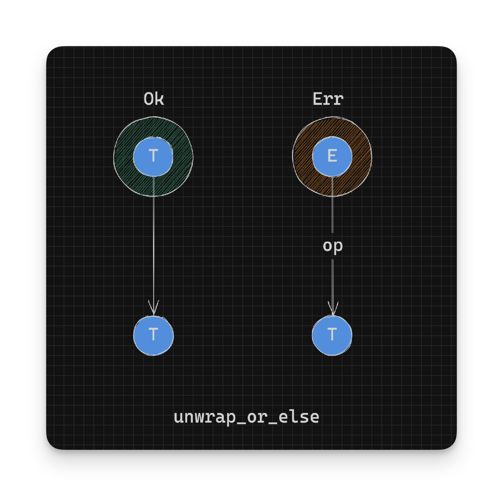

Working With Rust Result - Making Things Nicer with Fallbacks - Part 4
We can unwrap a Result in a nicer way, if we provide a default value of type T or call a function that returns a value of type T when given a type E:
// pseudocode
// Given: Result<T, E>
Ok(T) -> T
Err(_) -> T // Return value of `T`
Err(E) -> T // Use a function of type `E` -> `T`unwrap_or
unwrap_or is defined as:
pub fn unwrap_or(self, default: T) -> T {
match self {
Ok(t) => t,
Err(_) => default,
}
}In summary:
// pseudocode
// Given: Result<T, E>
// Return type: T
default: -> T
Ok(t) -> t -> T // Return value in Ok
Err(e) -> default -> T // Return default if in errorIn the above definition we supply a default value of type T. This default value will be used when there is an Err, the Ok value will be returned otherwise. This is very similar to map_or but where we don’t run a function on the success value.

Here’s an example of using unwrap_or to do just that:
let twenty_five_or_ten_1: u8 = twenty_five(20).unwrap_or(10); // 10
let twenty_five_or_ten_2: u8 = twenty_five(25).unwrap_or(10); // 25unwrap_or_else
There’s a similarly named function called unwrap_or_else. The main difference being that unwrap_or_else takes in a function op that is called when an Err is returned:
pub fn unwrap_or_else<F: FnOnce(E) -> T>(self, op: F) -> T {
match self {
Ok(t) => t,
Err(e) => op(e),
}
}In summary:
// pseudocode
// Given: Result<T, E>
// Return type: T
op: E -> T
Ok(t) -> t -> T // Return value in Ok
Err(e) -> op(e) -> T // Convert the value in Err to a `T`
This is very similar to the map_or_else function but where a function is only applied to the error case and not the success case.
unwrap_or_default
Another in the same family of functions is unwrap_or_default, which is defined as:
pub fn unwrap_or_default(self) -> T
where
T: Default,
{
match self {
Ok(x) => x,
Err(_) => Default::default(),
}
}In the above definition, if a Result is an Err then the default instance of type T is used. The type T has a constraint on it that requires that it has an instance of the Default trait: T: Default.
In summary:
// pseudocode
// Given: Result<T, E>
// Return type: T
T: Default -> T
Ok(t) -> t -> T // Return value in Ok
Err(_) -> T // Return Default instance for THere’s an example of how to use it:
let result_ok: Result<u32, String> = Ok(1);
let result_err: Result<u32, String> = Err("You have errors".to_owned());
result_ok.unwrap_or_default(); // 1
result_err.unwrap_or_default(); // 0This is also very similar to unwrap_or where, we supply a default value for the error case. With unwrap_or_default the default value is derived from the Default instance for type T.
- Continue on to Transforming Values
- Back to TOC